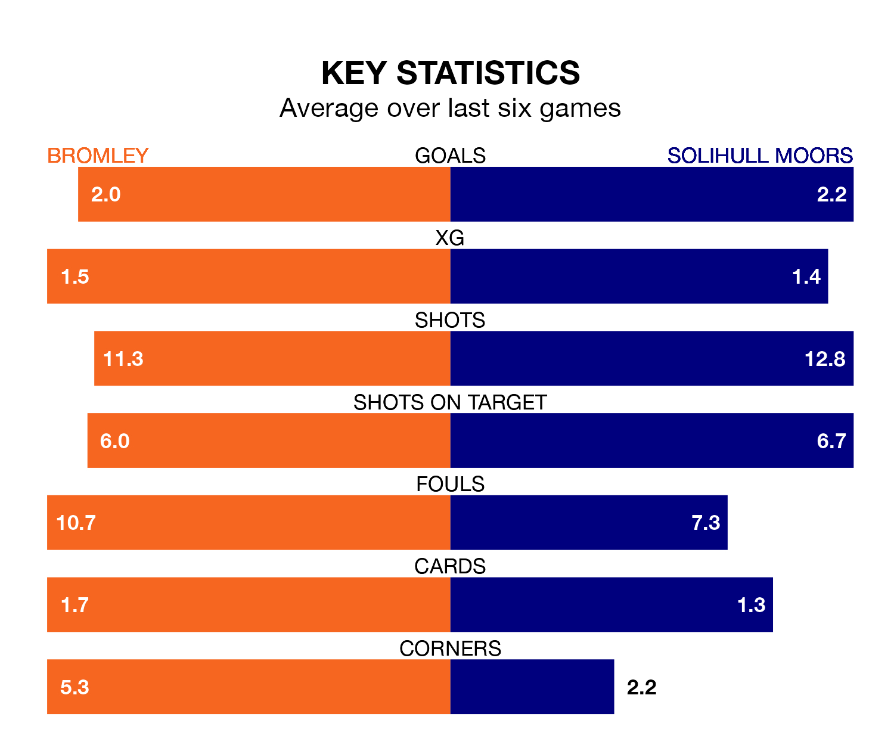

Two of the National League's top sides face each other at the Wembley Stadium in Sunday's kick-off, when third-placed Bromley host fourth-placed Solihull Moors.
Bromley have picked up 23 wins and 15 draws from 47 games so far this season, and sit two points above the visitors going into the 3pm match.
The Moors, meanwhile, have won 23 and drawn 13 of 48, picking up 82 points.
With 79 goals in 48 games so far this season, Solihull Moors are scoring more than average in the league with 1.6 goals per game. And they are conceding fewer than average, letting in 64 goals at a rate of 1.3 per game.
Bromley are also above average scorers, with 1.6 goals per game, compared to a league average of 1.5. They have conceded 1.1 goals per game.
In the last 10 years, Bromley and Solihull Moors have played each other on 18 occasions. Bromley won seven of them, Solihull Moors eight, and they drew three times.
On average, the Ravens scored 1.2 goals and the Moors 1.4 in those matches.
Their last meeting was on April 13, when Bromley won 3-0 at home.
The Ravens are in reasonable form in the National League, with three wins and two draws from their last six games.
With five wins and one loss over that period, the Moors's form is better – they have taken 15 points from 18, compared to the hosts' 11.
Bromley's last match was on Sunday, a 3-1 win against Altrincham, with Myles Weston (two) and Jude Arthurs getting the goals for the Ravens.
Solihull Moors beat Barnet 4-0 last time out, on April 27, with Jack Stevens, James Clarke, Joseph Christopher Sbarra and Tahvon Campbell on the scoresheet.
Updated: 12:00 (UTC), 02/05/24